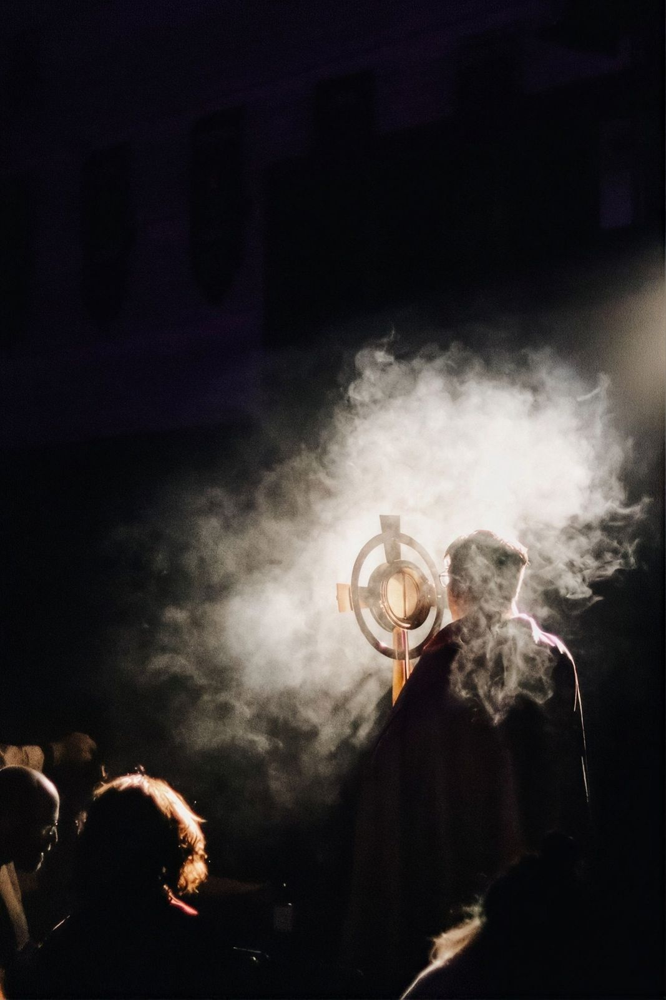
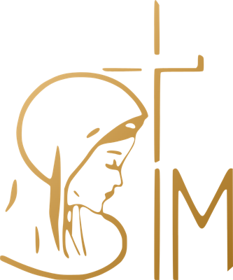

DATA22/11Domingo
HORÁRIO8hda manhã
INSCRIÇÕES20/10abertas a partir dessa data
30 anos de SIM
Um tempo de graça para celebrar a misericórdia
O Kairós dos 30 anos é um encontro para agradecer tudo o que Deus fez através da Sociedade Irmãos da Misericórdia desde 1996 e para deixar-se alcançar, mais uma vez, pela misericórdia de Jesus.
Kairós é o tempo de Deus, o momento oportuno da graça. Venha viver esse dia com a nossa comunidade.

Inscrições
Garanta a sua vaga
As inscrições abrem no dia 20 de outubro. Volte a esta página na data para se inscrever.
Fazer minha inscrição